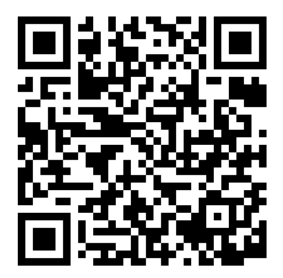
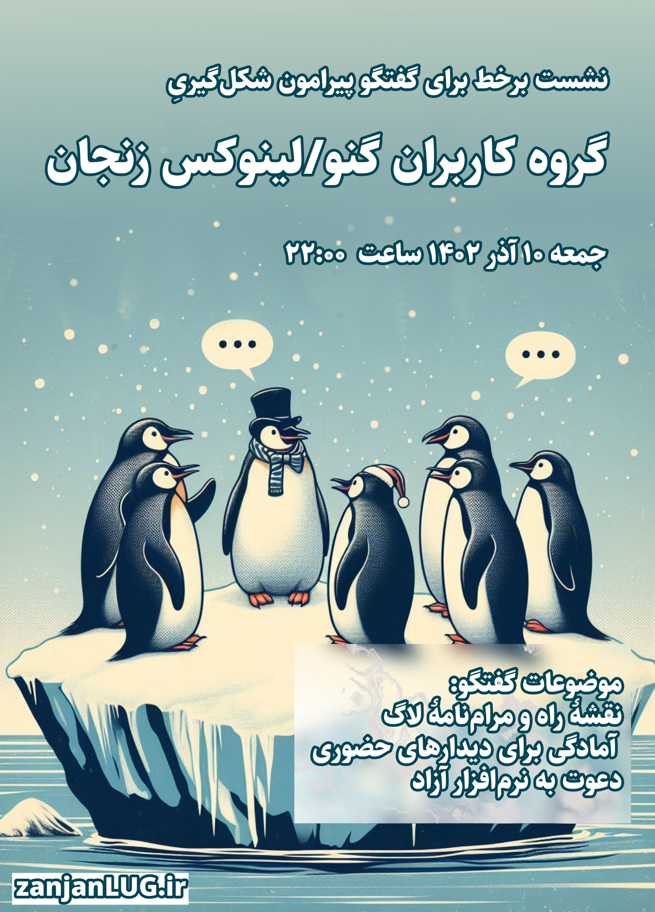

اینجا صفحهٔ وبِ لاگ زنجان است. این لاگ هنوز به معنی واقعی شکل نیافته ولی تاریخ نقطهٔ عطف شکلگیری آن شنبه ۲۷ آبان ۱۴۰۲ است
کد دعوت برای پیوستن به نمونهٔ خیار دات نت
https://khiar.net/invite/TwexvZP4

زمان:۱۴۰۲-۰۹-۱۰ ساعت ۲۲:۰۰
مکان:برخط
موضوع: گفتگو دربارهٔ ماهیت، اهداف و نقشهٔ راه لاگ

زمان:۱۴۰۲-۰۹-۱۰ ساعت ۲۲:۰۰
مکان:برخط
منتظر ما بمانید تا رویدادها و گفتگوهای جذاب بیشتری برگزار شود